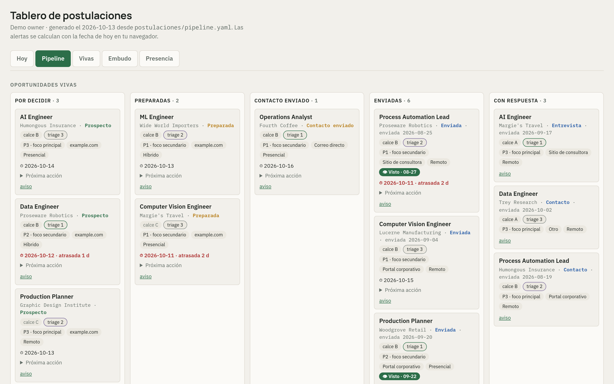
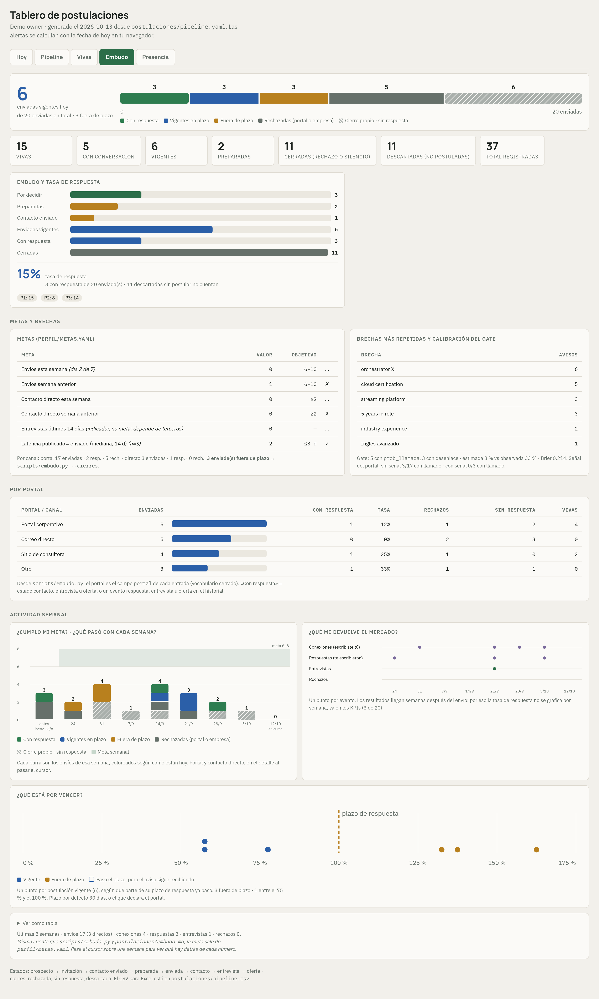
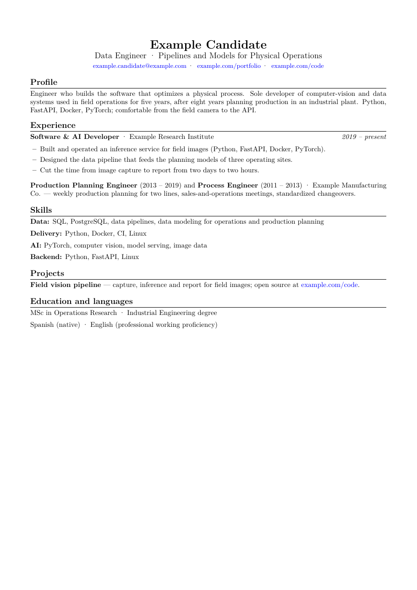

1Motivation
A job search is hundreds of small decisions a week: which posting to read, which to discard, what each CV should say. An AI agent reads and writes fast — and it can also invent a fact, forget a rule or attach the wrong file.
This project pairs an AI agent (Claude Code) with written rules, one library of verified facts and blocking checks: the agent does the reading, the human keeps every decision.
2Workflow overview
3Key components
4Example results · invented data



$ python3 reference/gate.py …/applications/blocked ✗ G1 placeholder left in the CV: [[metric?]] ✗ G1 open question left in the analysis (ASK:) ✗ G4 retired claim in text: "led a team of 12" ✗ G4 retired claim in metadata 'Subject' ✗ G7 date range 2012–2019 is not in the master profile ✗ G12 the text changed after the owner approved it BLOCKED — 6 problem(s). Nothing is sent.
# invented example — one pipeline entry state: no_response closed_by: own # who closed it closure_reason: silence channel_type: board fit: 68 # employer's view fit_detail: "23/25/15/5" call_probability: 3 # %, at submission gaps: ["orchestrator X"]
5Evaluation results · measured in the private system
The funnel
What happened to the agent's recommendations
The agent's discards, reviewed by the owner
6Outputs
One tailored CV per posting76 so far · each choice explained, gaps declared
A written analysis per postingverdict and reason, kept even when nobody answers
The board (HTML)today, pipeline, funnel and presence, generated daily
An immutable sent recordwhat the recruiter read is never rebuilt
7Design principles
Approval before sendbound to a fingerprint of the approved text
Gates block, never warnexceptions are written down, never coded in
Rules carry datesa changed rule reopens the discards it justified
Every failure becomes a controleach check traces to a real lesson
8Impact
Fewer, better applications: about a thousand opportunities discarded with a written reason against 77 documents sent — none without the owner reading and approving it, every one submitted by hand.
effort
traceable
agent
decides